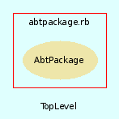

|  |
abtpackage.rb
AbtPackage class provides an interface to AbtPackage creation within AbTLinux. By inheriting from this class (class Fortune < AbtPackage) one picks up all supported standard functions for the abt AbtPackage manager to make use of the new AbtPackage.
Created by Eric D. Schabell <erics@abtlinux.org> Copyright 2006, GPL.
This file is part of AbTLinux.
AbTLinux is free software; you can redistribute it and/or modify it under the terms of the GNU General Public License as published by the Free Software Foundation; either version 2 of the License, or (at your option) any later version.
AbTLinux is distributed in the hope that it will be useful, but WITHOUT ANY WARRANTY; without even the implied warranty of MERCHANTABILITY or FITNESS FOR A PARTICULAR PURPOSE. See the GNU General Public License for more details.
You should have received a copy of the GNU General Public License along with AbTLinux; if not, write to the Free Software Foundation, Inc., 51 Franklin St, Fifth Floor, Boston, MA 02110-1301 USA
| [R] | dependsOn | list of dependsOn (DO) related package dependencies. |
| [R] | description | the package description. |
| [R] | execName | the executable name for the package. |
| [R] | hashCheck | security hash value of package sources. |
| [R] | homepage | the packages homepage. |
| [R] | licence | type of license this package has. |
| [R] | mirrorPath | available mirrors for this package. |
| [R] | name | the name of the package. |
| [R] | optionalDO | list of optional reliesOn (oRO) related package dependencies. |
| [R] | optionalRO | list of optional dependsOn (oDO) related package dependencies. |
| [R] | patches | list of available patches for this package. |
| [R] | patchesHashCheck | security hash value of this packages patches. |
| [R] | reliesOn | list of reliesOn (RO) related package dependencies. |
| [R] | srcDir | the source directory for the package. |
| [R] | srcUrl | the URL where this packages sources can be obtained. |
| [R] | version | the package version number. |
Constructor for an AbtPackage, requires all the packge details.
PARAM Hash - hash containing all package data.
[ show source ]
# File abtpackage.rb, line 147
147: def initialize( data )
148: @name = data['name']
149: @execName = data['execName']
150: @version = data['version']
151: @srcDir = data['srcDir']
152: @homepage = data['homepage']
153: @srcUrl = data['srcUrl']
154: @dependsOn = data['dependsOn']
155: @reliesOn = data['reliesOn']
156: @optionalDO = data['optionalDO']
157: @optionalRO = data['optionalRO']
158: @hashCheck = data['hashCheck']
159: @patches = data['patches']
160: @patchesHashCheck = data['patchesHashCheck']
161: @mirrorPath = data['mirrorPath']
162: @license = data['license']
163: @description = data['description']
164: end
Here is where the actual builing of the software starts, for example running ‘make’.
PARAM boolean - true if you want to see the verbose output, otherwise false. Defaults to true.
RETURNS: boolean - True if the completes sucessfully, otherwise false.
[ show source ]
# File abtpackage.rb, line 274
274: def build( verbose=true )
275: if ( verbose )
276: command = "make | tee #{$PACKAGE_INSTALLED}/#{@srcDir}/#{@srcDir}.build"
277: else
278: command = "make > #{$PACKAGE_INSTALLED}/#{@srcDir}/#{@srcDir}.build 2>&1"
279: end
280:
281: Dir.chdir( "#{$BUILD_LOCATION}/#{@srcDir}" )
282:
283: if( !system( command ) )
284: puts "[AbtPackage.build] - build section failed."
285: return false
286: end
287:
288: puts "[AbtPackage.build] - build section completed!" if ( verbose )
289: return true
290: end
Here we manage the ./configure step (or equivalent). We need to give ./configure (or autogen.sh, or whatever) the correct options so files are to be placed later in the right directories, so doc files and man pages are all in the same common location, etc. Don‘t forget too that it‘s here where we interact with the user in case there are optionnal dependencies.
PARAM boolean - true if you want to see the verbose output, otherwise false. Defaults to true.
RETURNS: boolean - True if the completes sucessfully, otherwise false.
[ show source ]
# File abtpackage.rb, line 246
246: def configure( verbose=true )
247: if ( verbose )
248: command = "./configure --prefix=#{$DEFAULT_PREFIX} | tee #{$PACKAGE_INSTALLED}/#{@srcDir}/#{@srcDir}.configure"
249: else
250: command = "./configure --prefix=#{$DEFAULT_PREFIX} 1> #{$PACKAGE_INSTALLED}/#{@srcDir}/#{@srcDir}.configure 2>&1"
251: end
252:
253: Dir.chdir( "#{$BUILD_LOCATION}/#{@srcDir}" )
254:
255: if ( !system( command ) )
256: puts "[AbtPackage.configure] - configure section failed."
257: return false
258: end
259:
260: puts "[AbtPackage.configure] - configure section completed!" if (verbose )
261: return true
262: end
Provides all the data needed for this AbtPackage.
RETURNS: hash - Contains all AbtPackage attributes (constants).
[ show source ]
# File abtpackage.rb, line 172
172: def details
173: return {
174: "Package name" => @name,
175: "Executable" => @execName,
176: "Version" => @version,
177: "Source location" => @srcDir,
178: "Homepage" => @homepage,
179: "Source uri" => @srcUrl,
180: "Depends On" => @dependsOn,
181: "Relies On" => @reliesOn,
182: "Optional DO" => @optionalDO,
183: "Optional RO" => @optionalRO,
184: "Security hash" => @hashCheck,
185: "Patches" => @patches,
186: "Patches hash" => @patchesHashCheck,
187: "Mirror" => @mirrorPath,
188: "License" => @license,
189: "Description" => @description
190: }
191: end
All files to be installed are installed here.
PARAM boolean - true if you want to see the verbose output, otherwise false. Defaults to true.
RETURNS: boolean - True if the completes sucessfully, otherwise false.
[ show source ]
# File abtpackage.rb, line 318
318: def install( verbose=true )
319: if ( verbose )
320: command = "installwatch --transl=no --backup=no " +
321: "--exclude=/dev,/proc,/tmp,/var/tmp,/usr/src,/sys " +
322: "--logfile=#{$ABT_TMP}/#{@srcDir}.watch make install"
323: else
324: command = "installwatch --transl=no --backup=no " +
325: "--exclude=/dev,/proc,/tmp,/var/tmp,/usr/src,/sys " +
326: "--logfile=#{$ABT_TMP}/#{@srcDir}.watch make install >/dev/null"
327: end
328:
329: Dir.chdir( "#{$BUILD_LOCATION}/#{@srcDir}" )
330:
331: if( !system( command ) )
332: puts "[AbtPackage.install] - install section failed."
333: return false
334: end
335:
336: puts "[AbtPackage.install] - install section completed!" if ( verbose )
337: return true
338: end
Last bits of installation. adding the service for automatic start in init.d for example.
PARAM boolean - true if you want to see the verbose output, otherwise false. Defaults to true.
RETURNS: boolean - True if the completes sucessfully, otherwise false.
[ show source ]
# File abtpackage.rb, line 350
350: def post( verbose=true )
351: # TODO: implement post section install init scripts service
352: return true
353: end
Preliminary work will happen here such as downloading the tarball, unpacking it, downloading and applying patches.
PARAM boolean - true if you want to see the verbose output, otherwise false. Defaults to true.
RETURNS: boolean - True if completes sucessfully, otherwise false.
[ show source ]
# File abtpackage.rb, line 203
203: def pre( verbose=true )
204: downloader = AbtDownloadManager.new
205:
206: # download sources.
207: if ( !downloader.retrieve_package_source( @name.downcase, $SOURCES_REPOSITORY ) )
208: return false
209: end
210:
211: # validate sources sha1.
212: if ( !downloader.validated( @hashCheck, "#{$SOURCES_REPOSITORY}/#{File.basename( @srcUrl )}" ) )
213: return false
214: end
215:
216: # unpack sources.
217: if ( !unpack_sources )
218: return false
219: end
220:
221: # ensure we have an installed directory to use.
222: if ( ! File.directory?( "#{$PACKAGE_INSTALLED}/#{@srcDir}" ) )
223: FileUtils.mkdir_p( "#{$PACKAGE_INSTALLED}/#{@srcDir}" )
224: end
225:
226: # TODO: implement pre section retrieve patches?
227: # TODO: implement pre section apply patches?
228:
229: return true
230: end
Any actions needed before the installation can occur will happen here, such as creating new user accounts, dealing with existing configuration files, etc.
PARAM boolean - true if you want to see the verbose output, otherwise false. Defaults to true.
RETURNS: boolean - True if the completes sucessfully, otherwise false.
[ show source ]
# File abtpackage.rb, line 303
303: def preinstall( verbose=true )
304: # TODO: preinstall section create_group?
305: # TODO: preinstall section create_user?
306: return true;
307: end
Cleans up this packages source build directory.
RETURNS: boolean - True if the completes sucessfully, otherwise false.
[ show source ]
# File abtpackage.rb, line 361
361: def remove_build
362: puts "Removings build..."
363: if ( $REMOVE_BUILD_SOURCES )
364: buildSourcesLocation = "#{$BUILD_LOCATION}/#{srcDir}"
365:
366: if ( !File.directory?( buildSourcesLocation ) )
367: return true
368: end
369:
370: if ( !FileUtils.rm_rf buildSourcesLocation, :verbose => true )
371: return false
372: end
373: end
374:
375: return true
376: end
Unpacks this packages source file into the standard build location.
RETURNS: boolean - True if the completes sucessfully, otherwise false.
[ show source ]
# File abtpackage.rb, line 40
40: def unpack_sources
41: srcFile = File.basename( @srcUrl )
42: sourcesToUnpack = "#{$SOURCES_REPOSITORY}/#{srcFile}"
43: unpackTool = ""
44:
45: # check for existing file in source repo.
46: if ( !File.exist?( sourcesToUnpack ) )
47: return false
48: end
49:
50: # check if possible existing sources in build directory.
51: if ( File.directory?( "#{$BUILD_LOCATION}/#{@srcDir}" ) )
52: return true
53: end
54:
55: # determine which supported compression used [gz, tar, tgz, bz2, zip].
56: compressionType = srcFile.split( '.' )
57:
58: case compressionType.last
59:
60: when "gz"
61: unpackTool = "tar xzvf"
62:
63: when "tar"
64: unpackTool = "tar xvf"
65:
66: when "bz2"
67: unpackTool = "tar xjvf"
68:
69: when "tgz"
70: unpackTool = "tar xzvf"
71:
72: when "zip"
73: unpackTool = "unizp"
74:
75: else
76: # unsupported format.
77: return false
78: end
79:
80: Dir.chdir( $BUILD_LOCATION )
81: if ( !system( "#{unpackTool} #{sourcesToUnpack}" ) )
82: return false
83: end
84:
85: return true
86: end